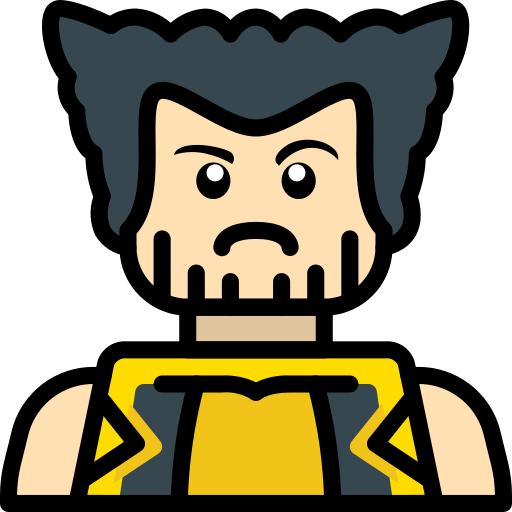

Historia
10/11/21
Contexto
Amediados de la década de los ochenta, a la Marvel de Jim Shooter le dio por hacer memoria. En consonancia con «el regreso a idea de que leer cómics Marvel era algo más que un entretenimiento casual a principios de 1983 saldría a la calle el número uno de The Official Handbook of the Marvel Universe
Excelsior
Desarrollo
El libro Historia del Universo Marvel, que no sirve por sí solo para definir todo lo que esta supone. Para que se hagan una idea, la mini-serie de Mark Waid, Javier Rodríguez y Álvaro López se halla mucho más cerca de aquella otra tradición de la Marvel de los buenos tiempos, que consistía en recurrir a los flashbacks en cuatro o cinco paneles que resumían el origen de algún enemigo o aliado que reaparecía o que recordaban eventos pretéritos al mismo tiempo que el protagonista los evocaba para sí mismo. Una forma de rememorar que conoció su mejor ejemplo en el número 138 de The Uncanny X-Men (1980), cuando Scott Summers, alias Cíclope, reflexionaba acerca de toda la trayectoria con sus compañeros mutantes, recapitulando en un monólogo interior más de tres lustros de aventuras. Sin ir más lejos, Forum lo eligió precisamente para introducir la popular serie entre el público español, eliminando, no obstante, el fondo de la portada de la edición americana compuesto a su vez por viejas cubiertas, y que servía por igual como homenaje y como ejercicio metalingüístico.
Sueña y no te rindas
Motivación, heroes con momentos de la historia
Sin embargo, el auténtico sentido de esta obra —su razón de ser— se concentra en la esfera ficcional. Marvel, además de generar contenidos exclusivos, ha sabido adaptar a su escala con naturalidad a toda una serie de personas reales, panteones milenarios, leyendas, mitos o héroes literarios forjados a lo largo de la historia de la humanidad.. A través de sus tebeos ha intentado asimismo ajustar de la mejor manera posible los hechos históricos con su propia línea temporal —no olvidemos que sus creaciones dicen moverse entre nosotros— hasta el punto de tergiversar nuestro pasado: la Gran Depresión fue causada por un grupo de villanos, Hitler murió ajusticiado por el primer Antorcha Humana, la Guerra del Vietnam no fue tal. De ese modo, acumulando capas y capas de imaginación ha dibujado, nunca mejor dicho, una realidad alternativa que Historia del Universo Marvel expone con toda su épica y en todo su esplendor. Y como consecuencia directa de ese logro, el cómic en cuestión no solo actúa como compilación de antecedentes o antología que adecente el caos universal, sino que sirve como beatífica explicación justificadora de todos los desmanes y licencias artísticas, literarias y creativas que fueron y serán. Desde el suero del supersoldado a la fórmula del infinito, pasando por las razones que explican la enorme proliferación de superseres terráqueos o por las historias ilegítimas del falso Capitán América durante la Guerra Fría, esta nueva presentación supone la explicación definitiva de todas las reescrituras y revisiones
Inspira haciendo lo que te gusta
Mark Waid, Javier Rodríguez y Álvaro López, HCuCo, Cuadernos de cómic n.º 14 (junio de 2020) ; Editorial,Etecé
Stan Lee Steve Ditko
 Mi top
MI TOP PERSONAJES>
Mi top
MI TOP PERSONAJES>
 Trailer EndGame
Trailer EndGame

 The mightys teams
The mightys teams
.png)